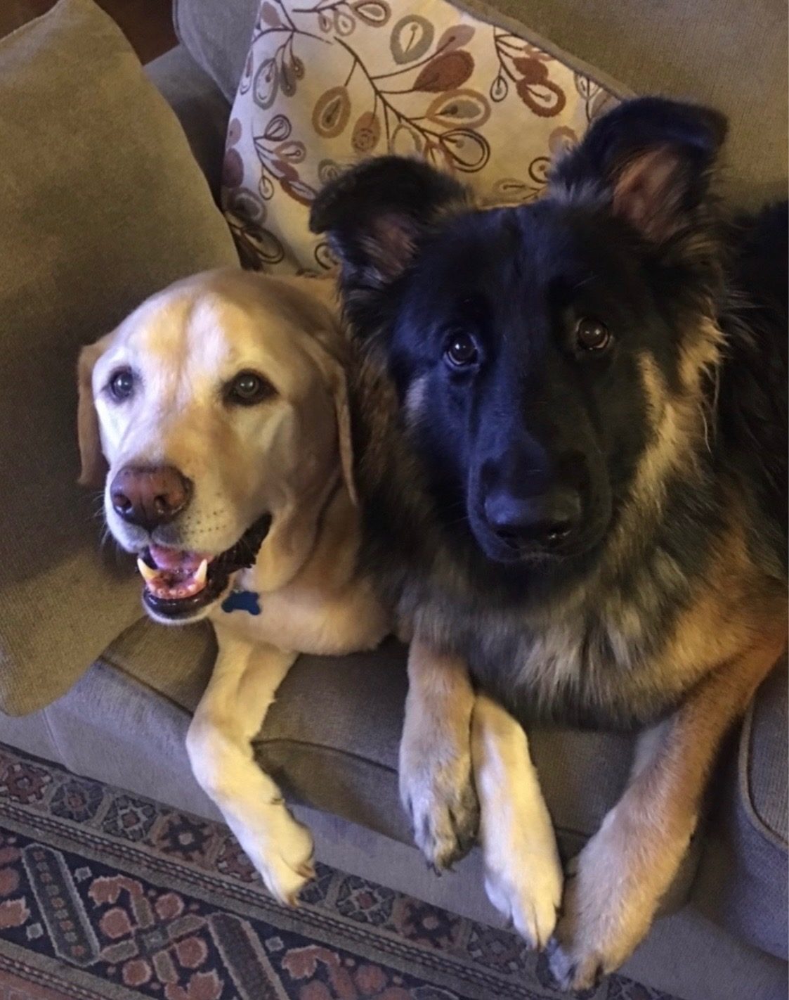

About Me
Hi, I’m Kim! I’m the owner of Passionate Pet Pros, LLC. I grew up in New Jersey and now call Port Charlotte, FL home.
Throughout the years, I’ve had several pets as part of my family. Before moving to Florida, I helped out with a friend’s pet sitting and dog walking business in NJ. That’s when I realized how much I truly loved it. That experience pushed me to follow my passion and start my own company.
When I’m looking after your pets, they’ll be treated just like my own. Along with being fully licensed and bonded, I am comfortable administering medicine and shots so your pets get everything they need. My goal is to give you peace of mind knowing they’re happy, safe, and loved while you’re away.
